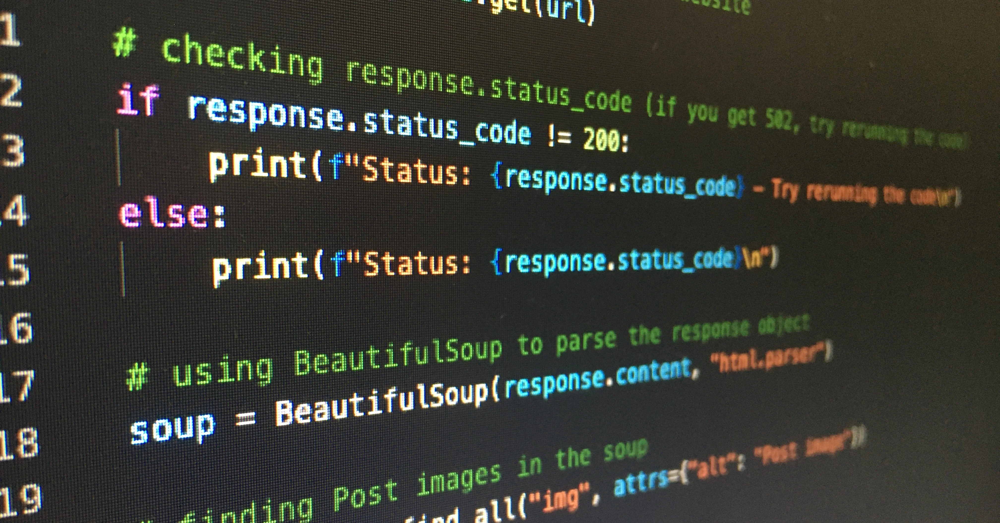
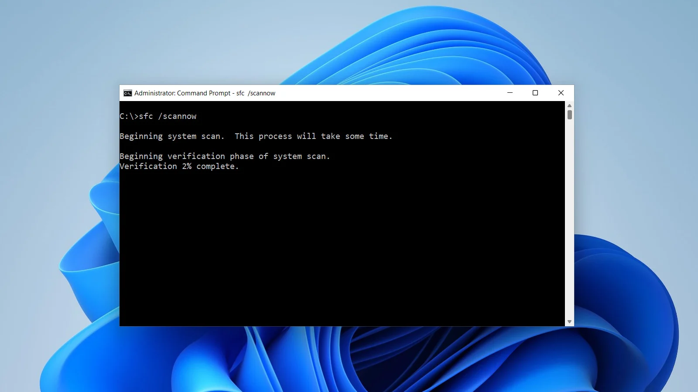

Overzicht Projecten:

Webtechnologie:
Webtechnologie omvat alle technieken en systemen die worden gebruikt om moderne websites en webapplicaties te bouwen. Het vormt de basis van alles wat je online ziet, van eenvoudige webpagina’s tot complexe platforms en interactieve apps.
Meer Info
Scripting:
Scripting maakt het mogelijk om sneller te werken, fouten te verminderen en processen efficiënter te maken. Of het nu gaat om het laten reageren van een website, het beheren van servers of het verwerken van informatie — scripting vormt de stille motor die veel digitale systemen soepel laat draaien.
Meer InfoDatacom & Netwerken:
Datacom & netwerken vormen de ruggengraat van moderne communicatie. Ze zorgen ervoor dat computers, systemen en apparaten informatie veilig en snel met elkaar kunnen uitwisselen — zowel binnen bedrijven als over het internet.
Meer Info
Besturingssytemen:
Een besturingssysteem (OS – Operating System) is de basissoftware van een computer, smartphone of ander digitaal apparaat. Het vormt de schakel tussen de hardware en de toepassingen die de gebruiker gebruikt. Zonder een besturingssysteem kan een apparaat geen programma’s uitvoeren of hardware aansturen.
Meer Info
Serverbeheer:
Serverbeheer omvat alle taken die nodig zijn om servers veilig, stabiel en efficiënt te laten functioneren. Servers vormen het hart van IT-omgevingen: ze verwerken data, draaien applicaties en ondersteunen bedrijfsprocessen. Goed beheer is daarom essentieel voor betrouwbaarheid en veiligheid.
Meer InfoLearn@Work Explore:
Learn@work Explore maken de studenten kennis met het werkveld waarin ze later terecht komen. Door binnen een brede waaier activiteiten in contact te komen met verschillende aspecten van het werkveld krijgen de studenten de mogelijkheid om te ontdekken waar hun interesses liggen, een professioneel netwerk uit te bouwen en een professionele mindset te adopteren
Meer Info